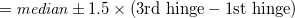
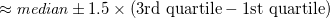
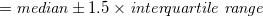

| Rの利用に関する備忘録 |
| Rの利用に関する備忘録 |
共通の変数と個別の変数を含むデータフレーム data01, data02, data03 から、共通の変数部分を抜き出して縦につなげて1つのデータセット data04 を作りたいとする。
これらに共通の変数名が idnames, fsnames, bsnames, scnames に格納されているとすると、
data04 <- rbind(data01[,c(idnames,fsnames,bsnames,scnames)],
data02[,c(idnames,fsnames,bsnames,scnames)],
data03[,c(idnames,fsnames,bsnames,scnames)])
でよい。 merge() を使ったり、変数名の指定に data01[,which(colnames(data01) %in% c(idnames, fsnames))] などとしたくなるのだが、これだとうまくいかない。
データフレームのうち条件を満たす行を抜き出す。
今、data01 の変数 position について、値 "1" か "2" を取る行のみを抜き出したいとする。 このとき、
data01 <- subset(data01, position=="1"|position=="2")
とすればよい。 なお、
attach(data01) data01 <- data01[(position=="1")|(position=="2"),] detach(data01)
としても同じことができる気がするのだが、うまくいかない（他の変数に謎の NA が発生する）。
箱ひげ図の描画。上から順に、上限の極値（ヒゲ）、上側四分位数、中央値、下側四分位数、下限の極値（ヒゲ）が描画される。 上下のヒゲは、それぞれ
|  | (1.1) | |||
 |
 | (1.2) | ||
|
 | (1.3) |
である。 これより極端な値は外れ値としてプロットされる。
| Rの利用に関する備忘録 |